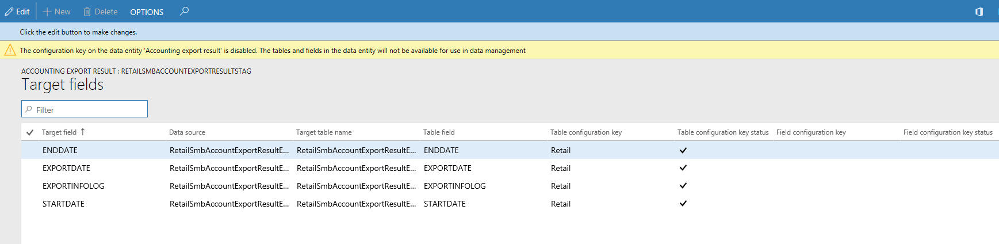
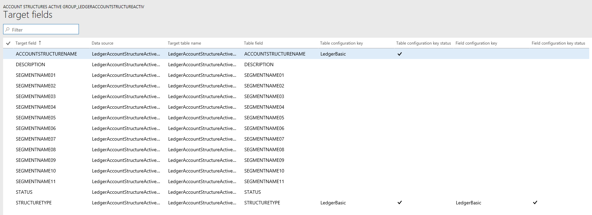

Konfigurationsschlüssel und Datenentitäten
[!include[banner](../includes/banner.md)]Bevor Sie Datenentitäten verwenden, um Daten zu importieren oder zu exportieren, wird empfohlen, dass sie zuerst die Auswirkung von Konfigurationsschlüsseln auf die Datenentitäten bestimmen, die Sie verwenden möchten.
Weitere Informationen über Konfigurationsschlüssel finden Sie unter Lizenzcodes und Konfigurationsschlüsselbericht (This is an external link).
Konfigurationsschlüsselzuweisungen
Konfigurationsschlüssel können einem oder allen folgenden Artefakten zugewiesen werden.
- Datenentitäten
- Tabellen, die als Datenquellen verwendet werden
- Tabellenfelder
- Datenentitätsfelder
In der folgenden Tabelle wird zusammengefasst, wie Konfigurationsschlüsselwerte zu verschiedenen Artefakten, die einem Objekt zugrunde liegen, das erwartete Verhalten des Objekts ändern.
| Konfigurationsschlüsseleinstellung für Datenentität | Konfigurationsschlüsseleinstellung zu Tabelle | Konfigurationsschlüsseleinstellung zu Tabellenfeld | Konfigurationsschlüssel zu Datenentitätsfeld | Erwartetes Verhalten |
|---|---|---|---|---|
| Deaktiviert | Nicht bewertet | Nicht bewertet | Nicht bewertet | Wenn der Konfigurationsschlüssel für die Datenentität deaktiviert ist, ist die Datenentität nicht funktionsbereit. Es spielt keine Rolle, ob die Konfigurationsschlüssel in den zugrunde liegenden Tabellen und Feldern aktiviert oder deaktiviert sind. |
| Aktiviert | Deaktiviert | Nicht bewertet | Nicht bewertet | Wenn der Konfigurationsschlüssel für eine Datenentität aktiviert ist, wird vom Datenverwaltungsframework der Konfigurationsschlüssel für jede der zugrunde liegenden Tabellen überprüft. Wenn der Konfigurationsschlüssel für eine Tabelle deaktiviert ist, ist diese Tabelle in der Datenentität für die funktionale Verwendung nicht verfügbar. Wenn der Konfigurationsschlüssel einer Tabelle deaktiviert ist, werden die Tabellen- und Datenentitätskonfigurationsschlüsseleinstellungen nicht ausgewertet. Wenn bei der primären Tabelle in der Entität ihr Konfigurationsschlüssel deaktiviert ist, verhält sich das System so, als ob der Konfigurationsschlüssel der Entität deaktiviert wäre. |
| Aktiviert | Aktiviert | Deaktiviert | Nicht bewertet | Wenn der Konfigurationsschlüssel für eine Datenentität aktiviert ist und die Konfigurationsschlüssel der zugrunde liegenden Tabellen aktiviert sind, überprüft das Datenverwaltungsframework den Konfigurationsschlüssel für die Felder in den Tabellen. Wenn der Konfigurationsschlüssel für ein Feld deaktiviert, ist dieses Feld in der Datenentität für die funktionale Verwendung selbst dann nicht verfügbar, wenn beim entsprechenden Datenentitätsfeld der Konfigurationsschlüssel aktiviert ist. |
| Aktiviert | Aktiviert | Aktiviert | Deaktiviert | Wenn der Konfigurationsschlüssel auf allen anderen Ebenen aktiviert ist, aber der Konfigurationsschlüssel des Entitätsfelds nicht aktiviert ist, dann ist das Feld nicht für die Verwendung in der Datenentität verfügbar. |
Note
Wenn eine Entität eine andere Entität als Datenquelle hat, dann wird die obige Semantik in rekursiver Weise angewendet.
Entitätslistenaktualisierung
Wenn die Entitätsliste aktualisiert wird, werden vom Datenverwaltungsframework die Konfigurationsschlüsselmetadaten für die Laufzweitverwendung erstellt. Diese Metadaten werden mithilfe der oben beschriebenen Logik erstellt. Vor der Verwendung von Einzelvorgängen und Entitäten im Datenverwaltungsframework wird dringend empfohlen, dass Sie warten, bis die Entitätslistenaktualisierung abgeschlossen ist. Wenn Sie nicht warten, sind die Konfigurationsschlüsselmetadaten möglicherweise nicht auf dem neuesten Stand und könnten unerwartete Ergebnisse hervorrufen. Wenn die Entitätsliste aktualisiert wird, wird die folgende Nachricht in der Entitätslistenseite angezeigt.

Datenentitätslistenseite
Die Datenentitätslistenseite im Datenverwaltungsarbeitsbereich zeigt die Konfigurationsschlüsseleinstellungen für die Entitäten an. Beginnen Sie von dieser Seite, um die Auswirkungen von Konfigurationsschlüsseln auf die Datenentität zu verstehen.
Diese Informationen werden mithilfe der Metadaten angezeigt, die während der Entitätsaktualisierung erstellt werden. Die Konfigurationsschlüsselspalte zeigt den Namen des Konfigurationsschlüssels an, der der Datenentität zugeordnet ist. Wenn diese Spalte leer ist, bedeutet dies, dass es keinen Konfigurationsschlüssel gibt, der der Datenentität zugeordnet ist. Die Konfigurationsschlüssel-Statusspalte zeigt den Status des Konfigurationsschlüssels an. Wenn sie ein Häkchen hat, bedeutet dies, dass der Schlüssel aktiviert ist. Wenn sie leer ist, bedeutet dies, dass entweder der Schlüssel deaktiviert ist, oder dass kein Schlüssel zugeordnet ist.

Zielfelder
Im nächsten Schritt wird ein Drillinto in die Datenentität ausgeführt, um die Auswirkung der Konfigurationsschlüssel auf Tabellen und Felder anzuzeigen. Das Zielfelderformular für eine Datenentität zeigt Konfigurationsschlüssel und Schlüsselstatusinformationen für die zugeordneten Tabellen und Felder in der Datenentität an. Wenn bei der Datenentität selbst ihr Konfigurationsschlüssel deaktiviert ist, wird eine Warnmeldung angezeigt, um zu informieren, dass die Tabellen und Felder im Zielfelderformular für diese Entität überhaupt nicht verfügbar sein werden, ungeachtet ihres Konfigurationsschlüsselstatus.

Untergeordnete Entitäten
Bestimmte Entitäten haben andere Entitäten als Datenquellen oder sind zusammengesetzte Datenentitäten: Konfigurationsschlüsselinformationen für diese Entitäten werden im Formular für untergeordnete Entitäten angezeigt. Verwenden Sie dieses Formular in ähnlicher Weise wie die oben beschriebene Entitätenlistenseite. Das Zielfelderformular für die untergeordnete Entität verhält sich auch wie das, was oben beschrieben wird.

Datenentitäten verwenden
Nachdem Sie die gesamte Auswirkung – sofern es eine gibt – von Konfigurationsschlüsseln auf die Datenentitäten verstehen, die Sie verwenden möchten, können Sie jetzt damit fortfahren, die Datenentitäten zu verwenden, indem Sie diese zu Datenprojekten hinzufügen.
Laufzeitüberprüfungen für Konfigurationsschlüssel
Mithilfe der Konfigurationsschlüsselmetadaten, die während der Entitätsaktualisierungsliste erstellt werden, werden Laufzeitüberprüfungen in den folgenden Anwendungsfällen ausgeführt.
- Wenn eine Datenentität einem Einzelvorgang hinzugefügt wird
- Wenn Benutzer auf „überprüfen” auf der Entitätsliste klicken
- Wenn der Benutzer ein Datenpaket in ein Datenprojekt lädt
- Wenn der Benutzer eine Vorlage in ein Datenprojekt lädt
- Wenn ein vorhandenes Datenprojekt geladen wird
- Wenn eine Vorlage in ein Datenprojekt geladen wird
- Bevor der Export-/Importvorgang ausgeführt wird (Charge, Nicht-Charge, wiederkehrend, Odata)
- Wenn der Benutzer eine Zuordnung generiert
- Wenn der Benutzer Felder in die Zuordnungsbenutzeroberfläche zuordnet
- Wenn der Benutzer nur „importierbare Felder” hinzufügt
Konfigurationsschlüsseländerungen verwalten
Immer wenn Sie Konfigurationsschlüssel auf der Entitäts-, Tabellen- oder Feldebene aktualisieren, muss die Entitätsliste im Datenverwaltungsframework aktualisiert werden. Durch diesen Prozess wird sichergestellt, dass der Framework die aktuellsten Konfigurationsschlüsseleinstellungen auswählt. Bis die Entitätsliste aktualisiert ist, wird die folgende Warnung in der Entitätslistenseite angezeigt. Die aktualisierten Konfigurationsschlüsseländerungen treten sofort in Kraft, nachdem die Entitätsliste aktualisiert ist. Es wird empfohlen, dass Sie die vorhandenen Datenprojekte und Einzelvorgänge überprüfen, um sicherzustellen, dass sie erwartungsgemäß funktionieren, nachdem die Konfigurationsschlüsseländerungen wirksam werden.